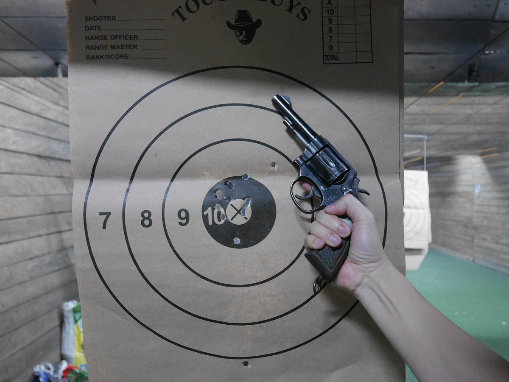

3. Tough Guys Shooting Range

Location: 19 Liberty Avenue Cubao, Corner 5th Ave, Quezon City, Luzon 1109 Philippines
Phone: 284210957
Facebook↗
- ABOUT
- Walk in and shoot.
Friendly welcoming staff. No need to book, just walk in. Get to grips with a 9mm Armscor 1911 and a pump action Shotgun. Full tuition from staff and no previous experience needed. a great way to spend some time in Manilla. The range has promos for Filipino's , but if you are not Filipino they do a tourist package, Relatively inexpensive and fun.
- PRICE
- Monday - Sunday
- 8:00AM - 5:00PM
- (Except Holidays)
- FIRING RANGE
- GUN SAFETY CERIFICATE
- LICENSING